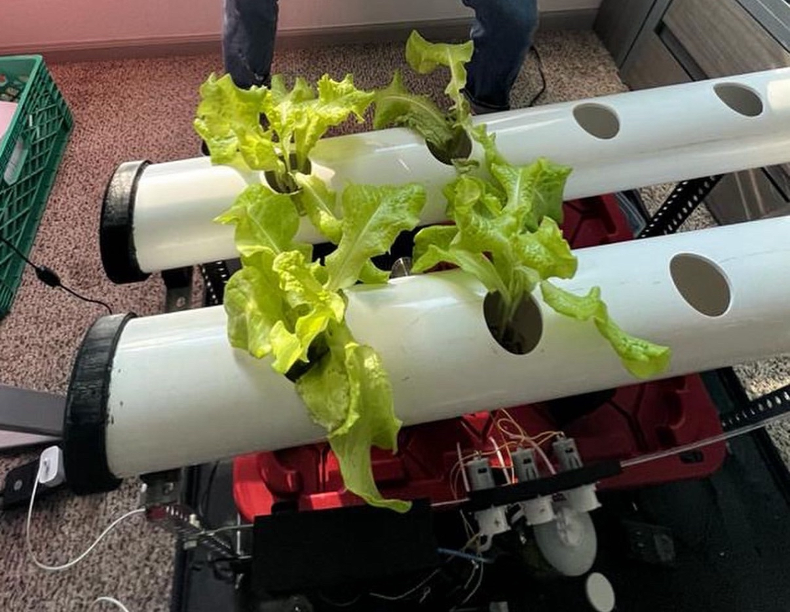

Automated NFT Hydroponic System
Created a hydroponic system that actively adjusts water nutrient level and pH

Hydroponic system assembled

Lettuce!

SolidWorks assembly CAD model I created of the hydroponic frame

Wiring schematic I created of the sensor-relay-Arduino system

Close-up of the 3D printed housing for the sensitive electronics

My friend cutting the PVC pipes to size
Overview
Designed and built a completely automated NFT (Nutrient Film Technique) hydroponic system that actively monitors and adjusts water nutrient levels and pH. This project was a good exercise for me and my other mechanical engineering friend to practice mechanical design, creating electronic control systems, and software programming to create a fully automated growing system capable of maintaining optimal growing conditions.
Key Features
- Automated monitoring and adjustment of nutrient and pH levels
- Real time data logging
- 3D printed housing for electronics
- Aluminum frame and PVC channels
Process
- Determine a plant of interest and the its ideal water conditions
- Made a preliminary CAD model for water circulation
- Designed and programmed sensor-pump circuit
- Fabricated the hydroponic frame and channels
- Tested the circulation and active water adjustment
- Profit with plant!
Tools
Skills
Outcomes and Results
By pairing an Arduino with a pH sensor, total-dissolve solid sensor, and water pump, we were able to successfully create a hydroponic system that maintains optimal water conditions for any plant. The system dispenses acid or base depending on the pH reading, or more nutrients depending on the TDS reading. The lettuce grew beautifully. I also would like to compare the systems grow speed compared to a non-enhance lettuce. For this specific system, we wanted to start up with a simpler plant to prove the concept like lettuce. We plan to enhance the setup with additional software and hardware features, such as an IoT device to give the system internet functionality. Additionally, we also plan to implement more in depth data metrics, with graphs over time and possibly a better reinforced frame.
Reflection
Reflecting on this project, it reminds me of the simpler ways engineering can be utilized to optimize and solve everyday problems. This was one of the first projects I completed outside of the guidance of a professor or employer, and it was especially rewardinng to acheive the result because of that. Back then, in small personal projects like this, I often felt uncertain because it seemed like the barrier to entry was just too high and it was difficult to commit. After doing this project, I am now constantly looking for similar aspects in my life that can be optimized with projects like this; sp I can be pushed to think and engineer beyond the classroom or the workplace.